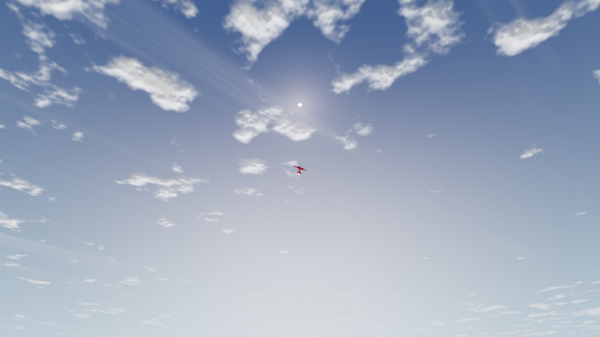
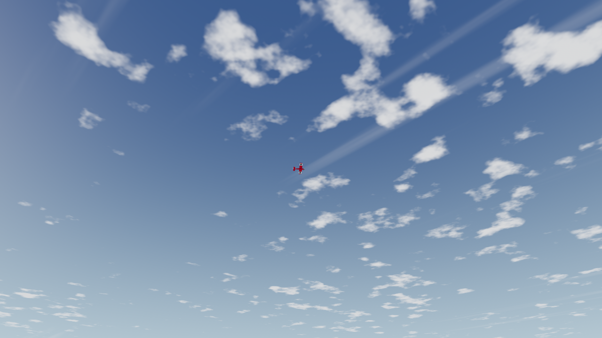
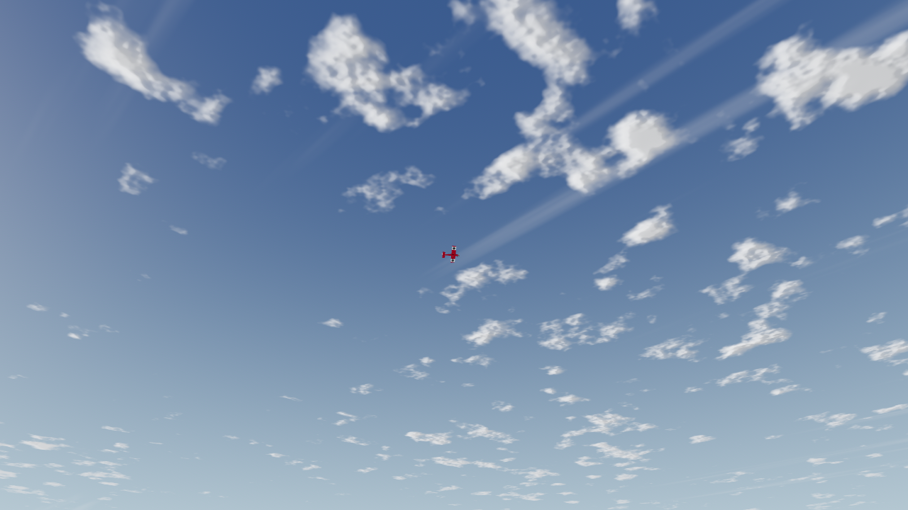
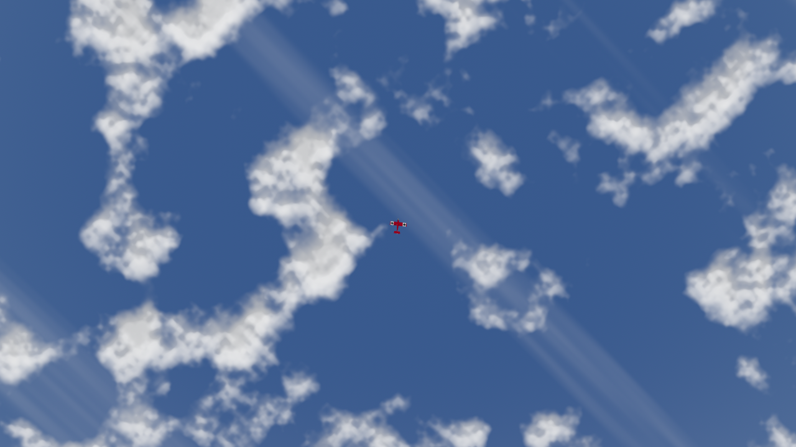
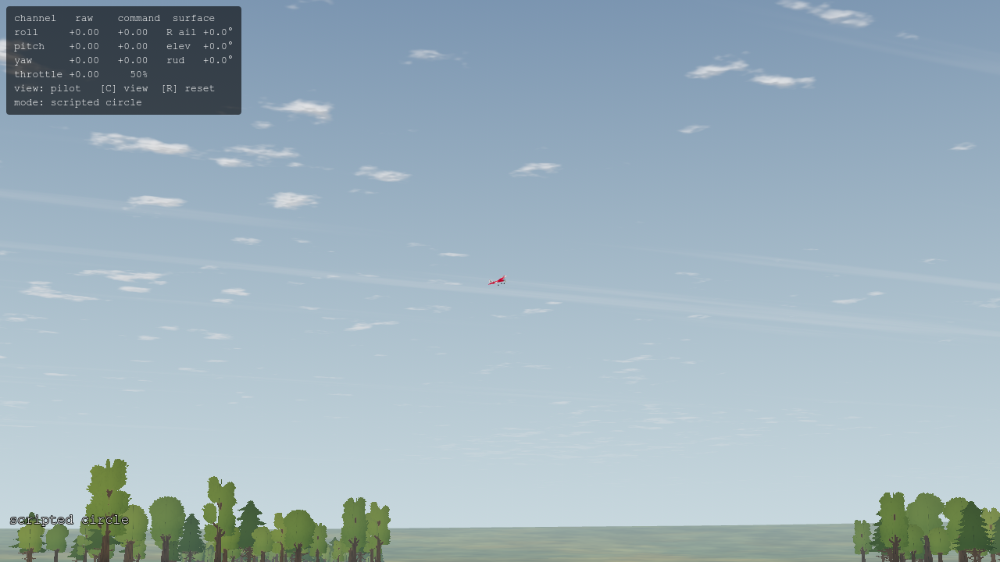
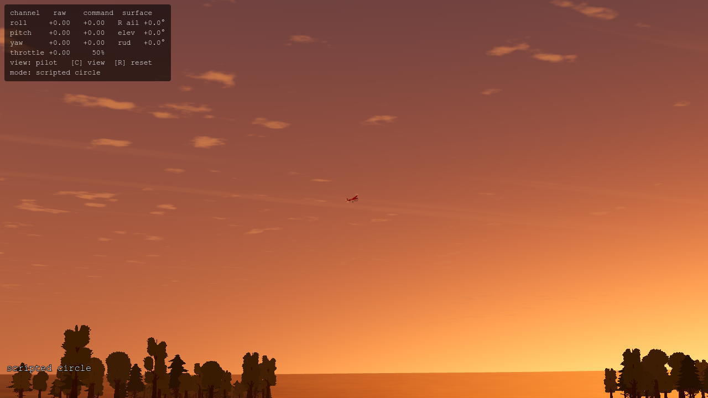
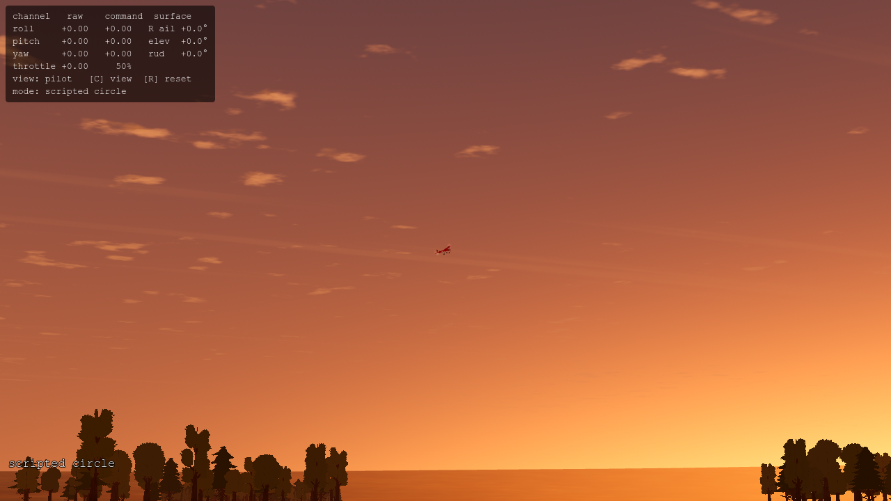
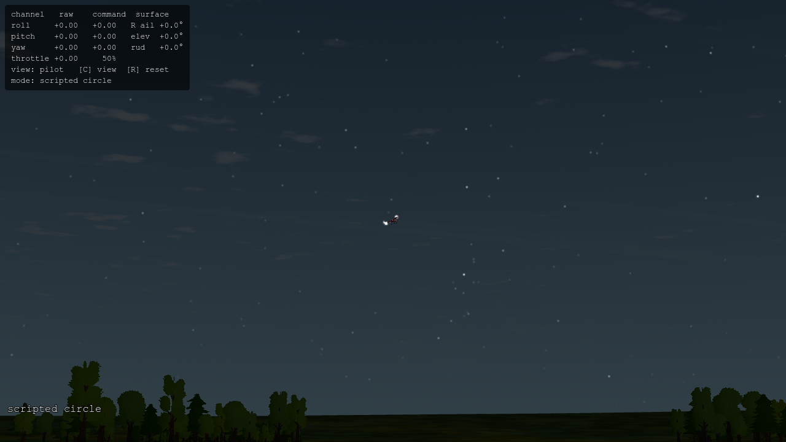

Godot 4.7.2 · Compatibility · RTX 3090 · 4× MSAA. Original engine PNGs; click to inspect at full resolution. Fixed cameras, poses and simulation times. The small aircraft and calibrated lighting are preserved.
Research, verification and limits · Raw timing summary · All captures, logs and trace evidence







